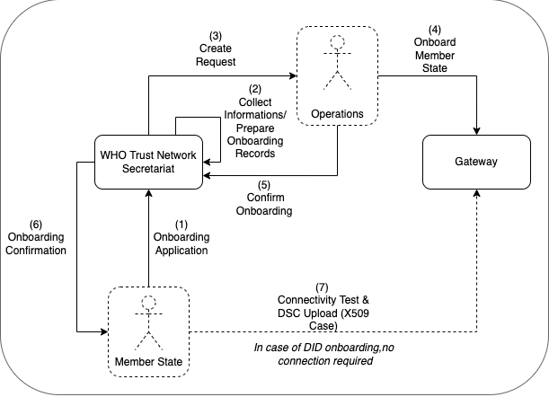

WHO SMART Trust
1.0.0 - 1.0.0

WHO SMART Trust
1.0.0 - 1.0.0

This page is part of the Trust (v1.0.0: Release) based on FHIR (HL7® FHIR® Standard) R4. This is the current published version in its permanent home (it will always be available at this URL). For a full list of available versions, see the Directory of published versions
The following describes the on-boarding processes for the Global Digital Health Certification Network (GDHCN).
These concepts and the following table contains abbreviations and terminology used throughout this document.
The GDHCN Administrative and Operational Framework should be considered the authoritative source of definitions and concepts in case of any discrepncies.
The GDHCN Secretariat manages the on-boarding process and applications of eligible Trust Network Participants to connect as a trusted party to the trust network. Prepared on-boarding records will be handed over to the TNG operator with the request to process the technical on-boarding of the trusted party. An organizational and technical successful application results in a confirmation and the Trust Network Participant can connect to the trust network as a trusted party.

Starting in September of 2023, participation will be opened to other eligible participants following the Full On-boarding Process (FOP).
Starting in June of 2023 and running through December 2023, participation in the GDHCN will be open to current participants of the European Union (EU) Digital COVID Certificate (DCC) network following a Transitive Trust On-boarding Process (TTOP). The IOP is an abbreviated version of the FOP leveraging the notion of transitive trust.
Please review the:
The application of the Trust Network Participant must contain at least:
The secretariat must handle the following tasks to establish the on-boarding process:
This section describes the steps for the Transitive Trust On-boarding Process (TTOP) to the GDHCN.
As the launch of the WHO Digital Health Trust Network, is expected to be 1 June 2023, only the Trusted Services related to issuance and verification of COVID-19 Certificates will be supported. WHO will not have access to any of the data contained within a Verifiable Digital Health Certificate that is issued by a Trust Network Participant under one of these Trusted Services.
The IOP will be in effect at the launch date of the GDHCN on 1 June 2023 and be in effect through December 31, 2023.
At launch of IOP, for technical reasons, eligibility to join the GDHCN is limited to WHO Member States which are participants in the EU DCC.
The principle of Transitive Trust leverages the trusted relationship that the EC has already established among its participants within the EU DCC network and uses that principle as a basis to allow for EU DCC participants to participate in the GDHCN without any overly burdensome on-boarding process. This will be referred to as the WHO-EC transitive trust relationship. The IOP outlined in this document is intended to serve as a quick and structured mechanism to onboard those eligible Trust Network Participants.
The requirements in this document will subsume those outlined in the EC DCC Equivalence Decision Annex II Technical procedure to onboard third countries. The following abbreviated Terms of Participation will apply during the IOP:
The organizational identity will be considered established and verified under a WHO-EC Transitive Trust relationship. The EC will provide to WHO necessary contact information for operators, owners or focal points of EC DCC Trust Network participants to facilitate communication.
As permissible, configuration information related to connections of EU DCC participant back-end systems will be provided by the EC to the WHO in order to facilitate establishing connections between EU DCC Trust Network Participants and the WHO Digital Health Trust Network infrastructure. Otherwise, such configuration information will be shared directly by the eligible Trust Network Participant to the WHO
This section describes the steps for the Full On-boarding Process (FOP) to the GDHCN
The FOP will be in effect in September 2023.
At launch of FOP at launch, for technical reasons, eligibility to join the GDHCN is limited to WHO Member States.
The organizational identity and contact will be established in an offline process by WHO through it’s Member State country offices with appropriate contacts at ministries of health or appropriate public health agency.